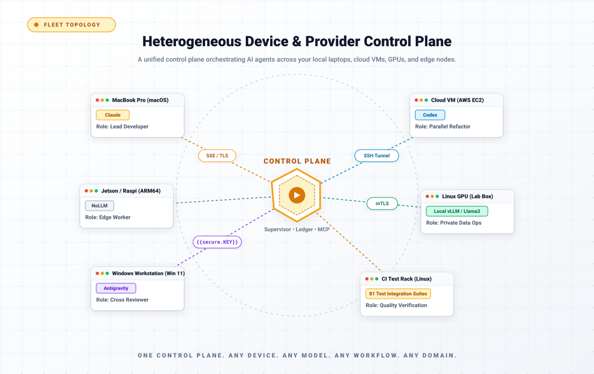
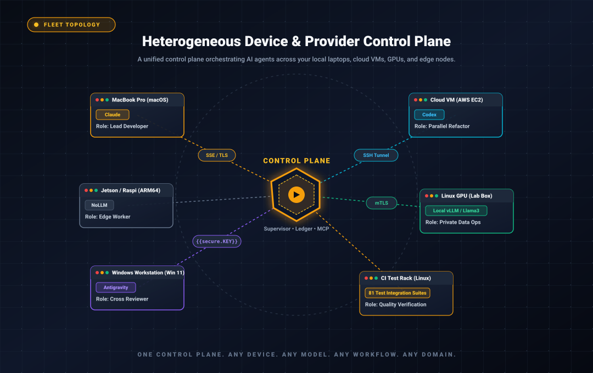

fleet-sprint: What It Does, What You Bring, and How You Watch It Work
A first-look guide for teams that have a git repo, a backlog in Azure DevOps, and Claude Code already working — and have never touched apra-fleet.
Section 1What fleet-sprint does
fleet-sprint is a program that runs a full development cycle on your codebase without a person driving each step. You give it a scoped batch of work (a set of issues with clear acceptance criteria), a git branch to work on, and at least one registered machine running an AI coding agent. It then runs, in a loop, until the work is done or it hits a limit you set:
- Plan. An AI "planner" reads your issues and breaks them into small, concrete tasks — each with written acceptance criteria and an explicit dependency order. A second AI ("plan-reviewer") checks that plan for coverage, task size, and testability before anything is built. The plan is not a document; it is written directly into the issue tracker, so every later step reads the same source of truth.
- Develop and review. An AI "doer" implements the tasks — real code, real commits on your branch, one commit per task. After each round, a separate AI "reviewer" diffs the branch against the acceptance criteria and either approves or sends specific tasks back with reasons. The reviewer can reopen tasks; the engine (deterministic code, not an AI) applies every state change, so nothing is closed on an AI's say-so alone.
- Deploy and integration-test (only if you provide the runbooks — see Section 2). A "deployer" follows your written deploy instructions to stand the software up, and an "integration test runner" follows your written test playbook to verify features end-to-end against the running software. Features are only marked done on passing evidence; failures become new bug issues that feed the next cycle.
- Evaluate. The engine looks at real issue-tracker state and decides: done, or run another cycle (up to a ceiling you set, default 5).
When the loop ends, a finalization pass runs: a reviewer renders an evidence-based PASS or FAIL verdict for the whole sprint, a "harvester" writes durable documentation and a changelog entry (including a cost breakdown), an optional once-per-sprint regression pass runs your regression playbook, and the engine pushes the branch and opens a pull request whose title and body state the verdict plainly. It never merges the PR — that is always a human decision.
Concretely, after a run finishes, here is what has changed in your world:
- Your repo has a new branch with a series of reviewed commits and an open PR against the base branch you chose.
- Your issue tracker (beads — see Section 2) has the sprint's issues decomposed, worked, and closed-with-evidence or left open with filed bugs explaining why.
- A sprint analysis document is committed to the branch (under
sprint-logs/), and the run's raw log is retained on disk.
What it is not: it does not invent product scope (the planner is explicitly forbidden from adding work beyond the issues you gave it), it does not merge its own PRs, and it does not know how to deploy or verify your software unless you write down how (Section 2).
Section 2What you need before you start
This is the honest part. fleet-sprint automates execution; it does not automate knowing your project. Four things are yours to build first, and none of them are generated for you.
2.1 Your Azure DevOps epics need equivalents in beads
fleet-sprint tracks all work in beads (bd), a git-friendly issue tracker: the data lives in your repo clone and syncs through your existing git remote, no extra server. That is where the sprint's plan gets written, where acceptance criteria live, and where closure evidence is recorded. For this guide, that is all you need to know about beads internals.
Before a sprint can run, the work in scope must exist there: one epic bead as the sprint root, with the in-scope features/stories as its children (created or linked with --parent — the engine resolves a sprint's scope by following parent links from the root id you launch with).
Getting your backlog in is better than we expected: beads itself ships a native Azure DevOps integration. bd ado sync --pull-only bulk-pulls work items from an AzDevOps org/project (configured via bd config or env vars: organization, project, PAT), bd ado pull fetches specific items, and a generic bd import accepts JSONL for anything else — all verified against the beads CLI and its documentation. Two honest caveats. First, this is upstream beads functionality, not something apra-fleet adds or wraps — apra-fleet knows Azure DevOps only as a git host (PAT provisioning for push/PR); validate the sync against your own org before relying on it. Second, an imported work item is not automatically sprint-ready: most AzDevOps items lack the concrete acceptance criteria every sprint role depends on — the planner decomposes from them, the doer is instructed to skip beads without them rather than guess, and the reviewer diffs against them. So the real work is curation, not transcription: parent the in-scope items under one root and write down what "done" looks like for each. One epic with 3-8 well-described children is enough for a first sprint.
2.2 Write deploy.md — fleet-sprint cannot write it for you
deploy.md lives at your repo root and is a literal runbook: the deployer agent reads it and executes it, command by command. Its contract (from the deployer's own role definition):
## Deploy— the commands to deploy/stand up the software, in order.## Smoke test— one command; exit code 0 means healthy.## Permissions(optional but recommended) — the command prefixes the agent needs allowed in its CLI permission settings. The deployer checks this before running anything and stops with a clear report if your allowlist is missing entries, rather than failing mid-deploy.
The deployer is explicitly forbidden from improvising: if deploy.md is absent, the deploy and integration-test phases are skipped cleanly — the sprint still runs, but nothing gets verified against a running system. If a step fails, it stops and reports the exact command and output; it never "works around" your deploy process.
Why you must write it: fleet-sprint has no idea whether your app is a Docker compose stack, an IIS site, a Kubernetes deployment, or npm start — and guessing at deployment is exactly the class of action you do not want an autonomous agent doing. Minimum viable version: the commands you already run by hand to start the app locally, plus one curl or CLI call that proves it is up.
2.3 Write an integration test playbook and a regression test playbook
These are instruction files a human writes, not test code. They tell the test-runner agents how to verify the software works. If you have zero automated tests today — which is our assumption about you — that is workable: a playbook can start life as written-down manual verification steps (commands to run, outputs to check), and grow more automated over time.
integ-test-playbook.md (repo root) — read every cycle by the integration test runner after a successful deploy. It describes how to exercise the deployed software and how to judge pass/fail. The runner closes a feature only when its tests pass, files a bug bead (with expected vs actual, output, and repro steps) when they fail, and never writes or fixes code itself. Note the division of labor: per-feature test code is written during the sprint by the doer (the planner creates a [test] task for every feature); the playbook is the stable, environment-level "how do we run and verify things here" document. Minimum viable version: a ## Permissions section, how to reach the deployed app (URL/port/paths), and how to run and interpret whatever checks exist — even if that is three curl commands and what their responses should contain.
regression-test-playbook.md (repo root) — run once per sprint, near the end, by a separate regression runner that owns a sandbox lifecycle (## Setup, a test scenario, ## Teardown — teardown always runs, pass or fail). Its job is proving existing functionality still works. Two honest softeners for a team starting from zero: (a) its result is explicitly informational — it never gates the sprint's PASS/FAIL verdict; failures are filed as standalone "carry-over" bugs for a future sprint; and (b) if the file is absent, the phase is skipped with a warning. So you can defer this one — but a sprint with no regression pass has no systematic check that it didn't break what already worked, and with no unit tests either, your only safety nets are the reviewer's diff reading and your own PR review. Plan to add it by your second or third sprint.
2.4 Register at least one fleet member
A member is a real machine (or just a separate folder on your machine) with a provider CLI — for you, Claude Code — and a working directory containing a clone of your repo. The fleet server dispatches all agent work to members.


fleet-sprint ships inside the @apralabs/apra-fleet package. Install it from npm (Node.js 22+):
npm install -g @apralabs/apra-fleet
apra-fleet # installs for Claude Code (default)
cd ~/.apra-fleet/bin && apra-fleet start # start the fleet serverAlternatively, download the standalone installer for your platform from GitHub Releases (apra-fleet-installer-darwin-arm64, apra-fleet-installer-linux-x64, apra-fleet-installer-win-x64.exe) and run it — installation is the default action. Either way, the fleet runtime is unpacked into ~/.apra-fleet/ with the apra-fleet binary at ~/.apra-fleet/bin.
Then load the fleet MCP server in Claude Code (/mcp) and register members conversationally — registration is driven through your agent in plain language, e.g. "Register a local member called dev1, work folder C:\work\myapp." Registration validates connectivity and that the CLI is present; remote machines work over SSH, with passwords collected out-of-band (never typed into the chat).
One member is enough to start, and a single-member sprint avoids the multi-clone topology questions entirely. You will also want git credentials provisioned for the member so it can push the branch and open the PR — apra-fleet's provision_vcs_auth supports GitHub, Bitbucket, and Azure DevOps (org URL + PAT), so an AzDevOps-hosted git repo is fully supported.
2.5 Scale sideways: one member per sprint, several sprints at once
The way to get more work done in parallel is more sprints, not more agents inside one sprint. Register several members and run a separate sprint on each — one member, one branch, one slice of the backlog per sprint. Three members running three independent sprints is a configuration that gets real daily use.
The supervisor is built for exactly this: it holds a reservation ledger over members and issue scopes, refuses a launch whose member or issue scope collides with an already-running sprint (HTTP 409 naming the conflict), and shows a member as reserved in the launch form while it is busy. Each sprint gets its own branch, its own PR, and its own dashboard, so the runs stay independent all the way to review.
Assigning several doers to a single sprint is a different thing, and an untested one — the launch form will let you tick several members for one sprint, but that configuration has not been exercised in practice, so treat it as experimental. Start with one member per sprint and add sprints, not doers.
Section 3How do I run it
Not by invoking a CLI directly. The supported entry point is the always-on supervisor (fleet-se-serve), a small local HTTP service (default port 8787) that owns a reservation ledger — it knows which members and which issue scopes are already claimed by a running sprint, and refuses launches that would collide (an HTTP 409 naming the conflicting sprint). Launching a sprint is one POST:
POST http://127.0.0.1:8787/api/sprints
{
"issue": "myapp-epic-1", // your epic bead id (comma-separate for multiple roots)
"members": ["dev1"], // registered member name(s)
"branch": "sprint/checkout-v2", // the branch the sprint develops on (created if absent)
"base": "main", // what the branch forks from and the PR targets
"goal": "P1/P2", // optional: priority ceiling for "done"
"maxCycles": 5, // optional
"budget": 25, // optional: USD ceiling for the run
"requirementsFile": "docs/checkout-v2-requirements.md" // optional, see Section 5
}The request is validated before anything spawns (malformed issue ids, branch names, or empty member lists are rejected with a 400 naming the field), then the sprint starts as a detached child process and the response gives you a sprintId, the child's dashboard port, and the path to its raw log file. POST /api/sprints/<id>/stop stops it cooperatively. There is also a launch form in the supervisor's web dashboard that submits through this exact same endpoint, so point-and-click and API launches can never diverge.
A useful guard worth knowing on day one: if a previous run of the same epic ended in a failure the engine classifies as deterministic (it would just happen again), a relaunch is refused with a 409 until you either fix the cause or pass an explicit override flag. The system prefers telling you "this will fail again" over silently burning another run.
Section 4How do I know what's happening
Open the supervisor's page in a browser (http://localhost:8787). It renders three things, and they answer the three questions stakeholders actually ask:
- What is running right now? One section per live sprint: branch, goal, a four-state health badge from the supervisor's watchdog, the members and issue scope it has claimed, and a link into that sprint's live view, its raw log, and Stop and Restart controls.
- What is free to work on? The full backlog rendered as a tree, minus whatever running sprints have claimed, recomputed live — so two sprints can never be pointed at the same work by accident.
- How do I start another one? The launch form (issue picker fed from the backlog, member and role assignment, goal, branch naming).


Clicking into a live sprint gives the per-sprint dashboard: phases and agent dispatches streaming in as they happen, token and dollar cost totals accruing live, a Stop button, a live rendering of the beads work graph (which tasks exist, which are in progress, which closed) and — at the end — a verdict badge (PASS in green, FAIL in red) with a direct link to the opened PR. Every sprint's raw output is also captured to a per-sprint log file linked from the dashboard, so even a run that crashes before reporting anything structured leaves a traceable trail.
A non-engineer can get real signal from a glance: how many sprints are running, whether any health badge is red, what the spend is so far, and — once finished — PASS or FAIL and a PR link. The deliverable a human ultimately reviews is that PR: reviewed commits, a verdict stated plainly in the PR title/body, an updated changelog with a cost breakdown, and a written sprint analysis document committed under sprint-logs/ on the branch.
Section 5How do architecture decisions and conventions get communicated
There is no dedicated "architecture decision record" input to fleet-sprint. Here is what actually exists, verified against the code and the shipped role contracts, ordered by reach:
bd remember— durable knowledge that reaches every role. Beads has a persistent-memory store:bd remember --key <key> "<one or two sentences>"writes an entry into the shared beads database, andbd prime(beads' context-recovery command) prints every stored memory in a "Persistent Memories" section, searchable viabd memories <keyword>. The delivery path: beads' convention — used by this repo itself, whose checked-in.claude/settings.jsonis exactly this — is a Claude CodeSessionStarthook that runsbd prime, so every agent session opened in the repo gets the memories as session context. Since each dispatched sprint role (planner, doer, reviewer, test runners) runs as a Claude Code session inside the member's working copy, a repo carrying that hook delivers your recorded conventions to all of them. Two verified caveats: the fleet-sprint engine does not runbd primeor inject memories into dispatch prompts itself (the hook in your repo is the whole mechanism — check in.claude/settings.jsonwith theSessionStarthook, as this repo does), and it is a Claude Code/Codex hook convention; other provider CLIs handle session context differently. For standing direction like "all new endpoints go through the gateway service" or "no new runtime dependencies without approval", this is the closest thing to a real cross-role channel that exists.- The requirements file (
requirementsFileon the launch request). The one explicit per-sprint channel: the engine reads the file and pastes its content verbatim into the planner's prompt. Use it for sprint-specific technical direction that should shape decomposition. Honest limit: it reaches the planner (and is readable by the harvester), not every doer — direction that implementers must follow needs mechanism 1 or 3. - Bead descriptions and acceptance criteria. The highest-fidelity channel to the agents writing the code: the planner must give every task concrete acceptance criteria, the doer implements to them, the reviewer diffs against them. If a constraint matters for a specific piece of work, state it in that epic/feature bead's description and the planner carries it down into task criteria.
- The repo itself, including
CLAUDE.md. The planner's contract tells it to read key source files "to understand existing conventions and structure", and the reviewer explicitly checks for consistency "with existing patterns and conventions" — your codebase's existing shape is an input. And because roles run as Claude Code sessions in your repo, a projectCLAUDE.md(Claude Code's native project-instructions file) is loaded for every session — a Claude Code feature rather than a fleet-sprint one, but a real place to pin style rules and hard "never do X" constraints. - The runbooks.
deploy.mdand the playbooks encode operational decisions (how we deploy, what "healthy" means, what we verify) as enforced behavior, since agents execute them literally.
Rule of thumb: durable cross-cutting conventions -> bd remember plus the bd prime session hook (and CLAUDE.md as belt-and-suspenders); sprint-scoped direction -> the requirements file; per-work-item constraints -> bead acceptance criteria.
Section 6What fleet-sprint actually does for you vs. what you still own
| fleet-sprint does this for you | You still own this |
|---|---|
| Decomposes your epics into a reviewed task graph with dependencies and per-task model tiers (cost routing) | Curating the epic and its children in beads with real acceptance criteria — including pulling your AzDevOps backlog across (beads' own bd ado sync / bd import do the transport; the curation is yours) |
| Implements tasks: real commits on a branch, one per task, build/lint/unit checks run before each commit | Having a repo that builds; deciding product scope; recording architecture direction (bd remember, requirements file, bead descriptions, CLAUDE.md) |
| Independent AI code review against acceptance criteria, with reopen/redo loops applied deterministically by the engine | Final human review of the PR — the PR is never auto-merged, and the verdict is advice, not authority |
| Deploys and smoke-tests — by literally executing your runbook | Writing and maintaining deploy.md; keeping the CLI permission allowlist current (agents stop and report rather than self-granting) |
| Integration-verifies features with evidence, closes only what passes, files structured bugs for what fails | Writing integ-test-playbook.md (can start as manual verification steps) and deciding what "verified" means for your product |
| Once-per-sprint regression pass with sandbox lifecycle and carry-over bug filing | Writing regression-test-playbook.md; accepting that with zero existing tests, early sprints have thin regression coverage |
| Live dashboard: activity tree, cost in USD, health watchdog, stop control, raw logs | Watching it occasionally, and acting on a red badge or a FAIL verdict |
| Cost governance: per-task model tiers, optional USD budget ceiling, cost block written into the changelog | Setting the budget; paying the bill |
| Opens the PR with a plain PASS/FAIL verdict and a committed sprint analysis | Merging (or not), and everything that happens after merge — your CI, your release process |
| Guards against operational foot-guns: member/scope reservation conflicts, deterministic-failure relaunch refusal, validated launches | Running the supervisor and fleet server; registering members; provisioning git and LLM credentials |
The pattern in that table is consistent: fleet-sprint automates execution and verification against artifacts you author. Teams that invest a day or two in sharp acceptance criteria, an honest deploy.md, and a first-cut playbook get an autonomous loop that produces reviewable PRs with evidence attached. Teams that skip the authoring get a system that — to its credit — stops and tells them exactly which file or criterion is missing, rather than pretending. Start with one epic, one member, one sprint, and a small budget ceiling, and judge it by the first PR it opens.